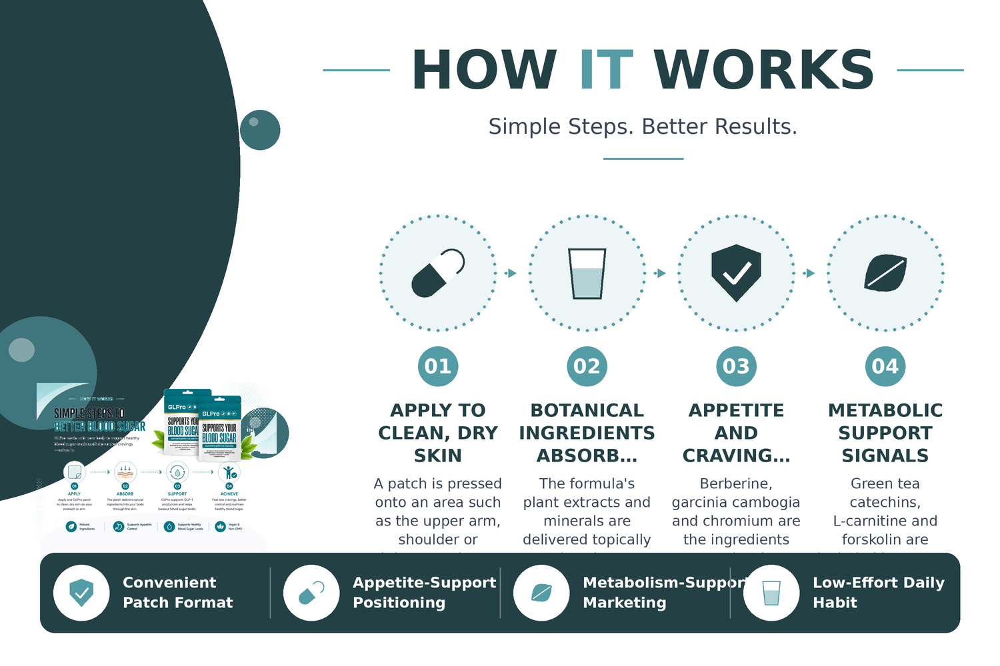

A patch is pressed onto an area such as the upper arm, shoulder or abdomen, where it stays in place through the day before being removed and replaced.
The formula's plant extracts and minerals are delivered topically rather than through digestion, which is the selling point brands use to distinguish patches from capsules.
Berberine, garcinia cambogia and chromium are the ingredients most closely associated with the marketing claim that the patch helps reduce between-meal snacking urges.
Green tea catechins, L-carnitine and forskolin are included because they are widely marketed as supporting normal fat metabolism and energy use.